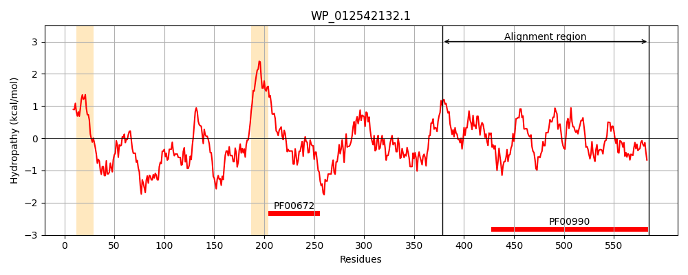
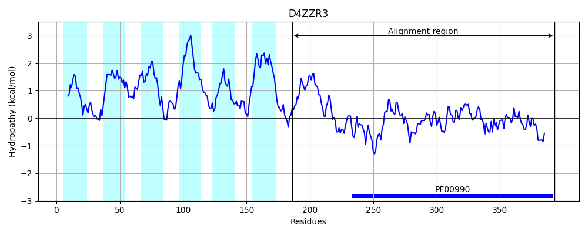
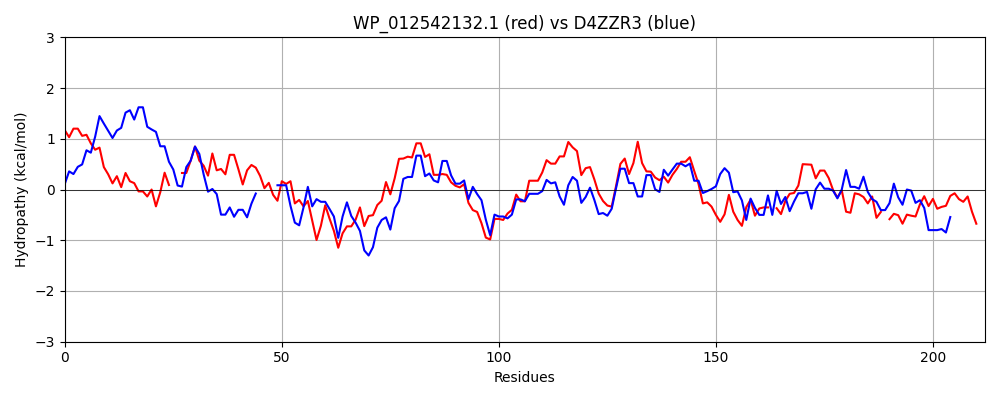

Hit Accession: D4ZZR3
Hit TCID: 9.B.34.1.3
Hit Description: gnl|BL_ORD_ID|3256 gnl|TC-DB|D4ZZR3|9.B.34.1.3 Putative diguanylate cyclase OS=Arthrospira platensis (strain NIES-39 / IAM M-135) GN=NIES39_A07490 PE=4 SV=1
Mach Len: 212
e:0.000000
Query TMS Count : 2
Hit TMS Count: 6
TMS-Overlap Score: 0.400000
Predicted Substrates:None
BLAST Alignment:
Score: 297 , Bit scores: 119 bits, E-value: 4.4e-29, Alignment length: 212, Percentage identity: 35
Query: 378 IAQGEAIGLLSFQNVTASDAPSRAY--LELMAEALGLALANQRLRSALLEKALFDSLTGLRNRHHLDEALHSQMALAVHTHTPLSCLMIDIDHFKAINDRYGHEAGDLVIKSVATIVQRAVRDIGMAFRYGGEEFLVLLPGIDEAGAHQCASEIYTQVHNMTL-RDGLTEIGQVDVSIGIASYPQHTQS-DSLLRAADAALYRAKELGRSRI 585
I+ +GLL F + +A + + L+ M L +AN++L + + D LTGL NR L+ L ++A PLS ++IDIDHFK IND++GH AGD V++ VA + + +R +AFRYGGEEF+VLLP + A A + + + + Q+ S G++ + + D LL+ AD ALY+AK GR+++
Sbjct: 186 ISNFHMMGLLLFMTIPCVNAQTLCFPVLDFMETYRELLVANKKLE----QLSTIDELTGLLNRRFLNSRLEQEIAYHQQMGFPLSIMLIDIDHFKKINDQFGHLAGDYVLQKVAKLTNQLLRVNDLAFRYGGEEFMVLLPRSEILQALDMAERLRVSISQLYFNHPDIPSDFQITASFGLSELTKDLRCLDDLLKQADLALYQAKSQGRNQV 393 | Protein Hydropathy Plots: |
|---|
|  |  |
Pairwise Alignment-Hydropathy Plot:
|
|---|
|  |